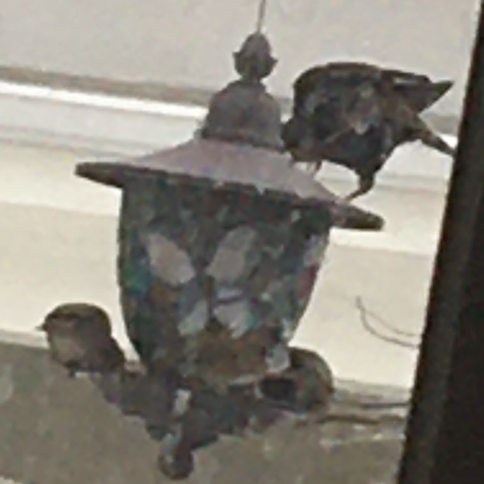

Stained Glass Feeder

Menu:
Mixed birdseed. Sometimes fruit.
Notes:
The crown jewel of my bird feeders. Not only is it the prettiest, it is at the perfect angle for me to see while I work. It also seems to be the hardest for the squirrels to get to.
Stand Up Feeder

Menu:
Mixed birdseed, fruit, nuts, birds
Notes:
A high capacity feeder, but plagued by squirrels. Location of bird on bird violence.